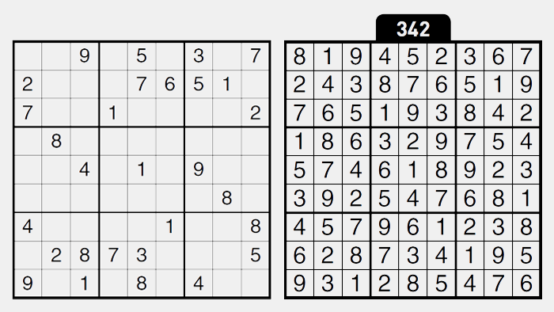

· 검사결과 ·
나와 어울리는 플래시 게임은
스도쿠
(ISTJ)

무슨 일이든 정확하게 하고 신중하게 일을 처리하는 당신에게는 ‘스도쿠’를 추천해드리고 싶어요!
명확한 규칙이 있는 스도쿠에서 숫자를 잘못 세거나 잘못 적으면 잘못을 바로 잡을 수도 없이 뒤죽 박죽이 되기 쉬우니 조심해야해요.
하지만 당신에게는 절대 실수란 용납할 수 없죠! 가끔 명확한 답이 나오지 않아 몇가지 경우의 수를 시도해 보아야 할 때도 있어요! 숲보다는 나무 보는 능력이 뛰어난 당신에게 다른 칸들을 생각 하면서 경우의 수를 시도하는 것이 쉬운 일만은 아닐거에요..
하지만 당신은 포기하지 않죠! 조금 늦어지더라도 숲을 보려고 노력하고 신중히 당신 앞에 주어진 문제들을 해결하다 보면 어느샌가 문제를 해결한 당신을 볼 수 있을거에요!
반복적인 일도 질리지 않고 할 수 있는 당신은 하루종일 혼자 스도쿠를 하더라도 거뜬히 해낼 수 있을거에요!
명확한 규칙이 있는 스도쿠에서 숫자를 잘못 세거나 잘못 적으면 잘못을 바로 잡을 수도 없이 뒤죽 박죽이 되기 쉬우니 조심해야해요.
하지만 당신에게는 절대 실수란 용납할 수 없죠! 가끔 명확한 답이 나오지 않아 몇가지 경우의 수를 시도해 보아야 할 때도 있어요! 숲보다는 나무 보는 능력이 뛰어난 당신에게 다른 칸들을 생각 하면서 경우의 수를 시도하는 것이 쉬운 일만은 아닐거에요..
하지만 당신은 포기하지 않죠! 조금 늦어지더라도 숲을 보려고 노력하고 신중히 당신 앞에 주어진 문제들을 해결하다 보면 어느샌가 문제를 해결한 당신을 볼 수 있을거에요!
반복적인 일도 질리지 않고 할 수 있는 당신은 하루종일 혼자 스도쿠를 하더라도 거뜬히 해낼 수 있을거에요!
검사자 총
73,591명 중
나와 같은 유형을 가진 사람은
2,346명 입니다.